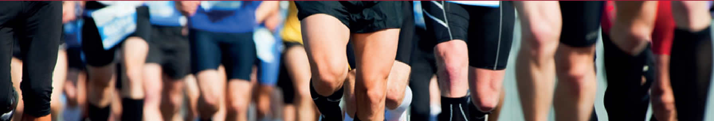

<!DOCTYPE html>
<html lang="es"></html>
<head>
  <meta charset="UTF-8">
  <meta name="viewport" content="width=device-width, user-scalable=no, initial-scale=1.0, maximum-scale=1.0, minimum-scale=1.0">
  <link rel="Shortcut Icon" href="http://usmp.edu.pe/images/logo.ico">
</head><!--	link(rel='stylesheet', type='text/css', href='css/demo.css')-->
<link rel="stylesheet" type="text/css" href="css/calendar.css">
<link rel="stylesheet" type="text/css" href="css/calendar_custom_2.css">
<link rel="stylesheet" href="css/bootstrap.css">
<link rel="stylesheet" href="css/slider.css">
<link rel="stylesheet" href="css/style.css">
<link rel="shortcut icon" href="http://www.usmp.edu.pe/images/logo.ico">
<script src="js/jquery.js"></script>
<script src="js/bootstrap.js"></script>
<script src="js/myJS.js"></script>
<script src="js/modernizr.custom.63321.js"></script>
<title>Deportes FIA</title>
<body>
  <div class="line"> </div>
</body><!-- header --> 
<header class="container">
  <div class="row">
    <figure class="col-md-4 logo"><a href="./"></a></figure>
    <div class="col-md-3 col-md-offset-5 h2-text">
      <h2>DEPORTES</h2>
    </div>
  </div>
</header><!-- FIN header --> 
<!--  INICIO MENU --> 
<div class="navbar-wrapper">
  <div class="container containerFix">
    <nav class="navbar">
      <div class="container">
        <div class="navbar-header">
          <button class="navbar-toggle collapsed" type="button" data-toggle="collapse" data-target="#navbar" aria-expanded="false" aria-controls="navbar"><span class="sr-only">Toggle navigation</span><span class="icon-bar"></span><span class="icon-bar"></span><span class="icon-bar"></span></button>
        </div>
        <div class="navbar-collapse collapse" id="navbar">
          <ul class="nav navbar-nav">
            <li style="background-color:#76142E;"><a href="./nosotros.html">NOSOTROS</a></li>
            <li><a href="./interfacultades.html">INTERFACULTADES</a></li>
            <li class="dropdown"><a class="dropdown-toggle" href="#" data-toggle="dropdown" role="button" aria-haspopup="true" aria-expanded="false">LIGAS <span class="caret"></span></a>
              <ul class="dropdown-menu">
                <li><a href="#">Profesionales</a></li>
                <li><a href="#">Universitarios</a></li>
              </ul>
            </li>
            <li class="dropdown"><a class="dropdown-toggle active" href="#" data-toggle="dropdown" role="button" aria-haspopup="true" aria-expanded="false">EVENTOS <span class="caret"></span></a>
              <ul class="dropdown-menu">
                <li><a href="#">Ciencias Administrativas  y Recursos Humanos</a></li>
                <li><a href="#">Ciencias de la Comunicación, Turismo y Psicología</a></li>
                <li><a href="#">Ciencias Contables, Económicas y Financieras</a></li>
                <li><a href="#">Derecho</a></li>
                <li><a href="#">Ingeniería y Arquitectura</a></li>
                <li><a href="#">Obstetrica y Enfermería</a></li>
                <li><a href="#">Medicina Humana</a></li>
                <li><a href="#">Odontología</a></li>
              </ul>
            </li>
          </ul>
        </div>
      </div>
    </nav>
  </div>
</div><!-- FIN  MENU --> 
<!-- SLIDER -->
<div class="container-fluid">
  <div class="row">
    <div class="col-md-12 fix-image--container"></div>
  </div>
</div>
<div class="container-frase">
  <h2 class="text-frase">“Amamos lo que hacemos, amamos los deportes”.</h2>
</div><!-- FIN SLIDER -->	
<!-- INICIO Contenido -->
<section class="container">
  <div class="row">
    <div class="col-md-9 col-md-push-0 col-sm-9 col-sm-push-3 col-xs-12 show-item" category="QS">
      <div class="row">
        <h2 class="col-md-2 title-h2--izq">Somos</h2>
        <div class="col-md-10">
          <hr class="hr-nosotros">
        </div>
      </div>
      <p class="textoG">La Universidad de San Martín de Porres promueve la práctica del deporte y recreación como factores educativos adicionales a la formación y desarrollo de los alumnos.</p>
      <h2 class="subtitle-h2">Misión</h2>
      <p class="textoG">Fomentar la práctica del deporte, la recreación, y la utilización del ocio productivo, mediante actividades lúdicas de fácil participación en la Universidad, como medio de integración y conservación de la salud física y mental.</p>
      <h2 class="subtitle-h2">Visión</h2>
      <p class="textoG">Posicionarnos como la universidad líder en la promoción y desarrollo de la práctica deportiva.</p>
      <h2 class="subtitle-h2">Valores</h2>
      <ul class="valores">
        <li>Respeto</li>
        <li>Responsabilidad</li>
        <li>Integridad </li>
        <li>Liderazgo</li>
        <li>Trabajo en equipo</li>
      </ul>
    </div>
    <div class="col-md-9 col-md-push-0 col-sm-9 col-sm-push-3 col-xs-12 show-item" category="EQ" style="display:none;">
      <div class="row">
        <h2 class="col-md-4 title-h2--izq"> Equipo de Trabajo</h2>
        <div class="col-md-8">
          <hr class="hr-nosotros">
        </div>
      </div>
      <h2 class="subtitle-h2">MIEMBROS DEL COMITÉ DEL PROGRAMA DEPORTIVO DE ALTA COMPETENCIA (PRODAC) DE LA UNIVERSIDAD DE SAN MARTÍN DE PORRES</h2>
      <ul class="valores">
        <li>
          <p>Mag. Luis Maraví</p>
          <p>Jefe de PRODAC de la Universidad de San Martín de Porres.</p>
        </li>
        <li>
          <p>Dr. Víctor García</p>
          <p>Representante de la Facultad de Ciencias Administrativas y Recursos Humanos.</p>
        </li>
        <li>
          <p>Lic. Fredy Ávila</p>
          <p>Representante de la Facultad de Ciencias de la Comunicación, Turismo y Psicología.</p>
        </li>
        <li>
          <p>Lic. María Pizarro</p>
          <p>Representante la Facultad de Ciencias Contables, Económicas y Financieras.</p>
        </li>
        <li>
          <p>Lic. Amparo Alvarado</p>
          <p>Representante de la Facultad de Derecho.</p>
        </li>
        <li>
          <p>Lic. Rosalva Rojas</p>
          <p>Representante de la Facultad de Ingeniería y Arquitectura.</p>
        </li>
        <li>
          <p>Dra. Liliana Gómez</p>
          <p>Representante de la Facultad de Medicina Humana</p>
        </li>
        <li>
          <p>Lic. María Isabel Ganoza</p>
          <p>Representante de la Facultad de Obstetricia y Enfermería.</p>
        </li>
        <li>
          <p>Cristopher Escudero</p>
          <p>Representante de la Facultad de Odontología.</p>
        </li>
      </ul>
    </div>
    <div class="col-md-3 col-md-pull-0 col-sm-3 col-sm-pull-9 col-xs-12">
      <ul class="menu-nosotros">
        <li><a class="category_item" category="QS"> <span class="glyphicon glyphicon-chevron-right"></span>	¿Quiénes Somos?</a></li>
        <li><a class="category_item" category="EQ"><span class="glyphicon glyphicon-chevron-right"></span> Equipo</a></li>
      </ul>
      <h2 class="title-h2--der">ÚLTIMAS NOTICIAS</h2>
      <div class="noticias-general">
        <p>Segunda fecha de los juegos deportivos  </p>
        <p>Primera fecha de los Juegos Deportivos</p>
        <p>Partido Inaugual de los Juegos Deportivos</p>
        <p>Inauguración de los Juegos Deportivos</p>
      </div>
      <h3 class="subtitle-h3">Calendario Deportivo</h3>
      <div class="container-two">
        <section class="main">
          <div class="custom-calendar-wrap">
            <div class="custom-inner" id="custom-inner"></div>
            <div class="custom-header clearfix">
              <nav><span class="custom-prev" id="custom-prev"></span><span class="custom-next" id="custom-next"></span></nav>
              <h2 class="custom-month" id="custom-month"></h2>
              <h3 class="custom-year" id="custom-year"></h3>
            </div>
            <div class="fc-calendar-container" id="calendar"></div>
          </div>
        </section>
      </div>
    </div>
  </div>
</section><!-- FIN Contenido -->
<hr class="line-dashed"><!-- Menu Pie -->
<section class="container">
  <div class="row">
    <div class="col-md-10 col-md-offset-1">
      <ul class="submenu">
        <li><a> Contacto<span class="separate">| </span></a></li>
        <li><a href="http://usmp.edu.pe/deportes/nosotros.html">Acerca de Nosotros <span class="separate">|</span></a></li>
        <li><a>Preguntas Frencuentes <span class="separate">|</span></a></li>
        <li><a>Enlaces</a></li>
      </ul>
    </div>
  </div>
</section><!-- Fin Menu Pie -->
<!-- footer -->
<footer class="container-fluid footerP">
  <div class="row">
    <div class="col-md-6 col-md-offset-3"> 
      <p class="footer--texto">Universidad de San Martín de Porres - Todos los Derechos Reservados
        <script type="text/javascript" src="js/showContenido.js"></script>
        <script type="text/javascript" src="js/jquery.calendario.js"></script>
        <script type="text/javascript" src="js/data.js"></script>
        <script type="text/javascript" src="js/functionCalendar.js"></script>
      </p>
    </div>
  </div>
</footer>